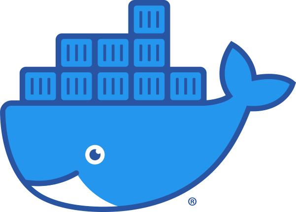

Table of Contents
Core SOC Platforms
SIEM / EDR / ITSMMicrosoft Sentinel
Cloud-native SIEM and automation platform in Azure. It ingests logs, runs analytics rules, supports playbooks, and helps analysts correlate identity, cloud, endpoint, and network events.
CrowdStrike Falcon
Endpoint-focused detection and response platform. Analysts use it to investigate hosts, review process trees, isolate systems, and understand what executed on an endpoint.
ServiceNow
Ticketing and workflow system used to track incidents, assign ownership, document actions, and coordinate between SOC, IT, engineering, and business stakeholders.
Splunk
Search-heavy SIEM workflow. Strong for ad hoc hunting, pivoting, data normalization awareness, and custom dashboards in many SOC environments.
Incident Response Methodology
Operational SequencePreparation
Logging, playbooks, contacts, asset inventory, backups, and access paths are ready before an incident starts.
Identification
Confirm the signal, determine whether it is benign or malicious, and define the likely scope.
Containment
Stop the bleeding: isolate hosts, block indicators, disable accounts, or restrict segments without destroying evidence.
Eradication
Remove persistence, patch the weakness, evict malicious tooling, and close the initial access path.
Recovery
Return systems to service, monitor closely, and verify that normal operations and detections are functioning.
Lessons Learned
Document what happened, what failed, and what controls or detections need to improve next.
Triage Steps
Chronological Flow
Start To Outcome1. Topology
`GNS3` and `OPNsense` create routes, NAT, segmentation, and boundaries.
2. Endpoints
Windows, Linux, and AD generate normal user and server behavior.
3. Sensors
`Sysmon`, `WEF`, `Suricata`, `Zeek`, firewall logs, and DNS logs create evidence.
4. Splunk
Aggregates logs, runs searches, dashboards, detections, and alerting.
5. Analyst
Validates the alert, scopes the impact, and decides containment or escalation.
What a SIEM does
`SIEM` means Security Information and Event Management. `Splunk` is where logs converge, searches run, and alerts are triaged.
Network metadata
Turns traffic into structured logs like connections, DNS, HTTP, and SSL, which makes hunting and reconstruction easier.
Packet inspection
Matches suspicious patterns and signatures in network traffic and can alert on exploit or malware-related activity.
Windows visibility
Shows process creation, command lines, network connections, and event log data from Windows systems.
SOC Vernacular
How Analysts Commonly SpeakCommon phrases
- “Let’s validate whether this is a true positive.”
- “What is the blast radius?”
- “Can we scope the affected hosts and users?”
- “What is the parent process and command line?”
Common analyst terms
- Pivot: jump from one indicator to related evidence.
- Scope: determine how wide the incident goes.
- Enrichment: add context like asset criticality or IP reputation.
- Containment: limit spread or communication.
How to sound operational
Lead with evidence and confidence level. Example: “We saw outbound traffic to a suspicious IP from one workstation. Host telemetry shows `powershell.exe` spawned from Outlook. We have isolated the system and are checking for credential exposure.”
Words you will hear often
`IOC`, `IOA`, `TP/FP/FN`, `blast radius`, `lateral movement`, `initial access`, `persistence`, `beaconing`, `egress`, `containment`, `eradication`, `enrichment`, `playbook`, `escalation`.
Networking
Packets, layers, capture, and scanning.
This tab ties the TCP handshake, the OSI model, Wireshark, Npcap, and port scanning together so the tooling makes sense in context.
Network If you do not understand where traffic should go, you cannot reason well about suspicious traffic.
Client To Server Path
Flowchart1. Client
An app or user action starts a network request.
2. Segment
Traffic hits the switch or virtual network and heads for the default gateway.
3. OPNsense
Firewall decides whether to allow, deny, route, or NAT the traffic.
4. Remote Path
Traffic crosses the network toward the target system or service.
5. Reply
The server answers and a session is established or fails.
TCP Three-Way Handshake
SYN, SYN-ACK, ACKSYN
The client initiates the connection request.
SYN-ACK
The server acknowledges and agrees to connect.
ACK
The client confirms and the TCP session is established.
Packet And Payload Anatomy
Header / Body / FooterControl and routing info
The header carries metadata needed to move and interpret the packet: source and destination addresses, ports, protocol details, flags, sequence data, and related control information.
The actual data
The payload is the content being transported. That could be HTTP data, DNS data, file fragments, credentials, commands, or any application-layer content.
Integrity at lower layers
At lower layers, especially Layer 2, a frame trailer can include error-checking information such as an FCS. Not every protocol stack level uses a “footer” in the same way.
Why this matters
If you know what lives in the header versus the payload, it becomes easier to understand what a firewall can filter, what a packet capture can reveal, and what an IDS or WAF can inspect.
OSI Model
What Each Layer MeansPhysical
Cables, radio, electrical and physical transmission.
Data Link
Frames, MAC addresses, switching.
Network
IP addressing and routing.
Transport
TCP and UDP, ports, reliability.
Session
Maintains communication sessions.
Presentation
Formatting, encoding, encryption representation.
Application
HTTP, DNS, SMTP, user-facing protocols.
Subnetting And CIDR
How Address Space Gets DividedSubnetting divides a larger IP network into smaller pieces so you can control broadcast scope, routing, security boundaries, and address assignment. `CIDR` notation such as `/24` tells you how many bits belong to the network prefix.
What `/24` means
IPv4 addresses are 32 bits. `/24` means 24 bits identify the network and 8 bits remain for hosts. In dotted decimal, `/24` is `255.255.255.0`.
`192.168.10.0/24`
In a common `/24`, `.0` is the network ID and `.255` is the broadcast address. The usual usable host range is `.1` through `.254`, which gives 254 usable hosts.
One familiar LAN
`255.255.255.0` gives 256 total addresses and usually 254 usable hosts. Common in small environments and labs.
Two halves
`255.255.255.128` splits a `/24` into two 128-address blocks. Each subnet has 126 usable hosts.
Four quarters
`255.255.255.192` creates four 64-address blocks. Each subnet has 62 usable hosts.
Eight smaller slices
`255.255.255.224` creates 32-address blocks. Each subnet has 30 usable hosts and is useful for tighter segmentation.
Subnetting Best Practices
How To Divide And Distribute NetworksKeep infrastructure outside DHCP
Gateways, firewalls, hypervisors, switches, domain controllers, printers, and other fixed assets should usually use static IPs or DHCP reservations outside the general client pool.
Subnet by trust and function
Users, servers, management interfaces, guest devices, IoT, labs, and voice often belong in different subnets or VLANs so you can apply different security policy between them.
Size for realistic growth
Do not make every subnet enormous “just in case.” Pick a subnet that fits the expected device count plus margin for expansion.
Document the plan
Track the subnet, VLAN, gateway, DHCP pool, owner, and intended purpose. Troubleshooting and incident response get easier when the design is obvious.
Use policy between segments
Subnetting creates boundaries, but firewalls and ACLs enforce them. Without rules, a segmented design can still allow broad lateral movement.
Reserve low addresses intentionally
A common pattern is to keep the gateway and core infrastructure in low addresses such as `.1` through `.49`, then place the client DHCP pool higher such as `.100` through `.199`.
Wireshark, Npcap, and Port Scanning
Tool RolesPacket analysis
Use `Wireshark` to inspect packets and sessions. It is for capture and analysis, not port scanning.
Windows packet capture
`Npcap` is the packet capture library and driver used on Windows by tools such as Wireshark and Nmap.
Main port scanner
If you ask “what software do I use to scan ports,” the main answer is `Nmap`. It discovers hosts, open ports, services, and some version info.
Permission matters
Only scan systems you own or have authorization to assess. Scanning outside your lab or approved scope can create legal and operational problems.
Infrastructure Equipment
What These Devices DoTraffic control point
Filters traffic based on rules, ports, IPs, networks, states, and sometimes applications. `OPNsense` is a firewall platform in your lab.
Network Access Control
Controls which devices can join the network and under what conditions. It helps enforce posture, identity, and segmentation before access is granted.
Web Application Firewall
Sits in front of web apps to inspect and filter HTTP or HTTPS requests for web-specific attacks like injection and malicious requests.
Wireless control
A `WLC` manages wireless access points. `APs` provide the wireless network itself. In enterprise environments, wireless telemetry can matter during access and device investigations.
Cloud-delivered access and security
`SASE` combines networking and security services, often including secure web gateway, zero trust access, and cloud-managed policy enforcement.
What else you may see
Switches, routers, proxies, load balancers, VPN concentrators, IDS/IPS appliances, DNS security tools, and email gateways all appear in real environments.
Incident Response
NIST-style process, translated into actual analyst work.
Use `NIST SP 800-61 Rev. 2` as the recognized reference point: preparation, identification, containment, eradication, recovery, and lessons learned. In practice, each stage is evidence collection plus decisions under time pressure.
NIST Cite it as NIST SP 800-61 Rev. 2, Computer Security Incident Handling Guide. That tells interviewers and teammates you are using a recognized incident-handling framework rather than making up your own ad hoc process.
Core Stages
How They Are AccomplishedPreparation
Build logging, asset inventory, escalation paths, playbooks, backups, contact lists, and access ahead of time. You cannot improvise good incident response from zero visibility.
Identification
Validate the alert, determine if it is malicious or benign, identify affected assets and users, and decide whether it meets incident criteria.
Containment
Reduce damage without erasing evidence: isolate hosts, block IPs or domains, disable accounts, remove public exposure, or segment traffic paths.
Eradication
Remove malware, persistence, vulnerable code, stolen access, rogue tasks, malicious inbox rules, and the root cause that allowed access.
Recovery
Return systems to service, validate they are clean, monitor for relapse, and restore business operations in a controlled order.
Lessons Learned
Document timeline, impact, missed signals, control gaps, communications, and follow-up actions to reduce repeat incidents.
How To Prioritize SOC Alerts
Severity By ContextTriage Checklist
First 10 QuestionsAlert name, source product, rule logic, timestamp, severity.
User, service account, mailbox, department, privileged identity.
Hostname, IP, VM, cloud workload, server role, internet exposure.
Process execution, login, network connection, file write, web request, email event.
First seen, last seen, dwell time, recurrence, related alerts in the same window.
Endpoint, firewall, VPN, email, web app, identity provider, cloud tenant.
Privilege level, data sensitivity, lateral movement, ransomware signs, customer impact.
Corroborate with a second source before escalating noise or causing business disruption.
Close, tune, escalate, contain, or hand off to another team.
Facts, timeline, evidence, decisions, owners, next review time.
Where To Look
EDR / Firewall / App LogsEndpoint investigation
Start with the host timeline or detection page. Look for process tree, parent-child relationships, command line, hash, user, persistence, network connections, and whether the host talked to other systems.
Network decision trail
Check source IP, destination IP, port, protocol, action allow or deny, NAT, rule hit, bytes transferred, and whether the traffic is a one-off or repeated beacon pattern.
App-specific truth
Check web server logs, API gateway logs, auth logs, database logs, exception logs, and audit trails. This is where you see what the application thought the user actually did.
Cross-source correlation
Use the SIEM to pivot on hostname, username, IP, domain, hash, URL path, or time window and connect endpoint, network, identity, and application evidence together.
Threat Intel And IOC Verification
Where To MonitorCISA KEV / advisories
Use CISA’s Known Exploited Vulnerabilities catalog and advisories to prioritize what is being exploited in the wild right now.
VirusTotal / AbuseIPDB
Use VirusTotal for hashes, URLs, and domains. Use AbuseIPDB for IP reputation. Treat all reputation results as clues, not proof by themselves.
Product threat feeds
Monitor Microsoft, CrowdStrike, Google, Palo Alto, Cisco, Mandiant, and similar vendor research when those tools or ecosystems are in your environment.
Watchlists
Track recurring bad IPs, phishing domains, new CVEs, observed attacker TTPs, and environment-specific detections in your SIEM watchlists and dashboards.
Checksums And Hashes
How To Compute ThemGet-FileHash .\sample.exe -Algorithm SHA256
Get-FileHash .\sample.exe -Algorithm MD5sha256sum sample.bin
md5sum sample.binAfter computing the hash, search for it in your EDR, SIEM, malware sandbox, and services like VirusTotal. A hash alone is not enough; tie it back to process, path, signer, user, and behavior.
Explaining Incidents To Non-Technical People
Who / What / When / Where / Impact / Next Steps“On [when], we identified [what happened] affecting [who/where]. At this time, the main risks are [data, operational, or financial impact]. We have already [containment steps]. Next we are [next steps], and we will provide the next update at [time].”
OSI
Read this tab left to right: encapsulate, transmit, decapsulate.
This section turns the OSI model into packet movement instead of a memorization list. Start with application data, watch headers get added, then follow how the receiving host peels them back off.
OSI Each lower layer wraps the data from the layer above it. That wrapping is why analysts can inspect addresses, ports, flags, payloads, and integrity fields separately.
OSI In Practice
Layer By LayerPhysical
Copper, fiber, radio, signal timing, and actual bit transmission.
Data Link
Frames, MAC addresses, switches, VLAN tags, and frame checks.
Network
IP addressing, routing decisions, TTL, and path selection.
Transport
TCP and UDP live here: ports, sequencing, retransmission, and flow control.
Session
Session setup, continuation, teardown, and dialogue state.
Presentation
Formats, serialization, compression, and encryption representation.
Application
Protocols users recognize, such as HTTP, DNS, SMTP, SMB, and RDP.
Packet Structure
Header / Payload / FooterNot every layer uses a footer, but the idea stays consistent: control data around the edges, useful content in the middle.
Transmission And Reception
Send To ReceiveVLANs And Segmentation
Practical IsolationWorkstations and normal employee traffic.
Application servers and back-end services with tighter firewall rules.
Internet access only, no internal trust.
Switches, firewalls, hypervisors, and admin interfaces kept separate.
Protocols
How hosts talk, how fast they talk, and which conversations are risky.
This tab groups communication protocols by purpose so you can distinguish transport behavior, management traffic, web traffic, name resolution, wireless standards, and secure replacements.
Protocols Ask three questions every time: what problem does this protocol solve, what metadata does it expose, and does it protect the traffic or trust it in cleartext?
TCP Vs UDP
Transport BehaviorCommon Communication Protocols
What They Are ForHTTP / HTTPS
Web browsing and APIs. HTTP is plaintext. HTTPS is HTTP protected by TLS.
DNS
Maps names to IPs. Standard DNS is usually plaintext unless wrapped with DoT or DoH.
SSH / Telnet / RDP
SSH encrypts command-line administration. Telnet does not. RDP can be secure, but it is still a high-value attack surface.
SMB / FTP / SFTP
SMB is common in Windows environments. FTP is plaintext. SFTP runs over SSH and is the safer file-transfer choice.
SMTP / IMAP / POP3
Mail protocols often need STARTTLS or implicit TLS to avoid plain credentials and message exposure.
DHCP / ARP / ICMP
DHCP gives addresses, ARP maps IP to MAC on local networks, and ICMP carries control and diagnostic traffic.
Unsafe Vs Safer Choices
Replace Cleartext Where PossibleTelnet, FTP, HTTP, SMBv1, SNMPv1/v2c, and old plaintext admin pages expose credentials or weak trust models.
SSH, SFTP, HTTPS, SMBv3, SNMPv3, VPNs, and management interfaces protected by MFA and strong certificates.
RDP, exposed VPN portals, and admin consoles are still high-priority targets because valid credentials can turn encryption into a false comfort.
Encryption hides content, but metadata like destination, timing, JA3-style fingerprints, cert subjects, and process origin can still be useful.
Wi-Fi Standards
a / b / g / n / ac / ax802.11b
2.4 GHz, slower legacy standard, but historically important for compatibility.
802.11a
5 GHz, less crowded than 2.4 GHz but shorter range.
802.11g
2.4 GHz with faster throughput than 11b.
802.11n
MIMO support, 2.4 and 5 GHz, major jump in speed and reliability.
802.11ac
5 GHz, higher throughput, beamforming improvements, common enterprise baseline for years.
802.11ax
Wi-Fi 6, better multi-device efficiency, lower latency, and stronger performance in dense environments.
VPN
VPNs create encrypted paths into or across networks.
A VPN, or Virtual Private Network, wraps traffic inside an encrypted tunnel so users, admins, branches, or cloud environments can communicate as if they were on a trusted internal path.
VPN Ask four questions: who is connecting, from where, to what internal resources, and whether the tunnel is full, split, temporary, or persistent.
What A VPN Does
Core Mental ModelCommon VPN Types
Remote Access Vs Site-to-SiteRequires software on the endpoint and is common for employee remote access.
Some VPN access is app-specific through a web portal instead of a full network tunnel.
Common for firewall-to-firewall or router-to-router encrypted links.
Devices connect automatically so remote systems stay managed and reachable even offsite.
Connection Flow
What Happens In OrderUser Starts VPN
The endpoint launches the client or visits the portal and begins a connection to the public VPN gateway.
Identity Check
The gateway checks username and password, certificate, MFA prompt, device posture, or a RADIUS or AD-backed identity flow.
Tunnel Forms
Keys are negotiated, the tunnel comes up, and the client receives routes, DNS settings, and access policy.
Traffic Enters Internal Paths
The user can now reach allowed servers, apps, or subnets through the encrypted tunnel.
Logs Are Generated
The gateway, identity provider, RADIUS server, firewall, EDR, and SIEM record connection, auth, source IP, duration, and failures.
Split Tunnel Vs Full Tunnel
Why It Matters To AnalystsA compromised remote device on split tunnel may reach internal resources while also talking directly to the internet outside central inspection paths.
What Analysts Check
VPN TriageAuth Pattern
Look for repeated failures, odd success after many failures, impossible travel, unusual MFA prompts, or unusual login hours.
Source IP / Geo
Check whether the connection came from an expected ISP, country, ASN, or known corporate egress location.
User And Device
Confirm whose account it is, whether the endpoint is known, and whether EDR shows suspicious processes or post-login activity.
Internal Reach
Review what subnets, hosts, admin panels, RDP targets, SSH targets, or cloud apps were reached after the VPN session started.
Session Timing
Short bursts, concurrent sessions, overnight access, or repeated reconnects can all matter depending on the user and role.
Containment
If compromise is likely, disable the account, revoke sessions, block the source, require password reset, and review MFA and device trust.
Common Risks
Why VPNs Stay High ValueIf attackers get valid credentials, the VPN can become a direct path into the internal environment.
Weak MFA workflows, push spam acceptance, or stolen session tokens can undermine the tunnel security.
Internet-facing VPN gateways are frequent targets for exploitation, especially when unpatched or misconfigured.
Users should not get wide flat network reach when they only need one app, one jump box, or one subnet.
Ports
Ports map traffic to services.
A port is a logical endpoint used by transport-layer protocols like TCP and UDP so one host can run many network services at once. Secure or insecure usually depends on both the protocol and whether encryption or modern configuration is present.
Ports If a firewall allows `443/tcp`, that usually means HTTPS can reach the service. If it allows `3389/tcp`, that often means RDP is reachable. Port numbers are shorthand for expected behavior.
What In-Line Means
Observation Vs EnforcementCommon Ports
Service / Use / Security NotesFile transfer. Plain FTP is insecure because credentials and content can be exposed.
Secure remote shell and secure file transfer over SSH. Preferred over Telnet and FTP.
Remote terminal in plaintext. Generally considered insecure.
Mail transfer. Usually needs TLS hardening and anti-spoofing controls.
Name resolution over UDP or TCP. Traditional DNS is usually plaintext.
Address assignment and network bootstrapping.
Simple file transfer with no real security. Commonly considered unsafe on untrusted networks.
Web traffic in plaintext. Usually replaced by HTTPS on 443.
Mail retrieval. Plain POP3 is insecure unless wrapped with TLS.
Time synchronization. Important for log correlation and incident timelines.
Windows RPC endpoint mapping. Common in enterprise internals, high-value for lateral movement mapping.
Legacy Windows networking. Often noisy and risky if exposed broadly.
Mail retrieval. Prefer TLS-enabled variants.
Monitoring and traps. SNMPv3 is preferred over v1/v2c because it adds security.
Directory queries. Plain LDAP can expose information if not protected.
Encrypted web traffic via TLS. Standard secure web port.
Windows file sharing and admin functions. Important internally, dangerous if exposed externally.
Mail sending with modern secure transport expectations.
Device log forwarding. Traditional syslog is often plaintext unless protected in transit.
LDAP wrapped in TLS, safer than plain LDAP.
IMAP over TLS.
POP3 over TLS.
Common Microsoft SQL Server port. High-value target if internet-exposed.
Common Oracle listener port.
Unix/Linux network file sharing. Sensitive if broadly reachable.
Database service. Usually should not be public-facing.
Remote desktop. Encrypted, but frequently targeted and high risk if exposed.
Database service. Usually internal only.
Remote desktop. Often less safe than modern managed admin access paths.
Windows remote management. 5986 adds TLS.
Alternative web service ports often used by apps, proxies, or admin panels.
Lab Building
What goes in a VM and what does not.
This tab separates the parts of a home SOC lab that should live inside VMs from the things you should keep out of the lab entirely.
Lab Keep the lab isolated. Treat it like a training range, not your everyday computing environment.
Build Order
Phase 1 To 31. Host
Physical PC or laptop with enough RAM and SSD space.
2. Hypervisor
VirtualBox, VMware Workstation, or Proxmox.
3. Network
`GNS3` and `OPNsense` define the lab’s routes and boundaries.
4. Systems
Windows, Linux, AD, `Kali Purple`, and maybe `Nessus`.
5. Visibility
`Splunk`, `Sysmon`, `WEF`, `Suricata`, `Zeek`.
What Goes In VMs
Yes- `OPNsense` firewall VM
- `Splunk` VM
- Windows client and server VMs
- Linux server or workstation VMs
- `Kali Purple` VM
- `Nessus`, `Zeek`, or `Suricata` if hardware supports them
What Should Not Go In The Lab
No- Your personal banking, email, and daily identity accounts
- Work credentials, work VPNs, or employer data
- Personal password manager contents
- Unnecessary sensitive files from your real machine
- Anything you would regret exposing during a misconfiguration
VM
How the virtual machines fit together.
This tab focuses on the virtualization side of the lab: what each VM does, how they connect, and why snapshots and isolation matter.
VM Think of the host machine as the platform, and each VM as a role: firewall, SIEM, endpoint, server, attacker, or scanner.
Host To VM Diagram
Role MapPhysical Machine
Provides CPU, RAM, storage, and the hypervisor.
OPNsense VM
Acts as the firewall, gateway, NAT, and segmentation point.
Windows / Linux VMs
Generate user activity, auth logs, service traffic, and endpoint evidence.
Splunk / Sensors
Collect telemetry from hosts, network devices, and security tools.
Kali / Nessus
Generate scan data, attack simulation, and validation activity.
VM Roles By Function
SwimlanesRouting, firewalling, DNS, DHCP, segmentation.
CPU, RAM, storage allocation, snapshots, networking.
Virtual network topology and lab wiring.
User activity, PowerShell, browser, logons.
Identity, authentication, domain services.
Server services, logs, shell activity, web targets.
Searches, dashboards, detections, and alert triage.
Network visibility and packet-derived evidence.
Exposure assessment and offensive simulation.
Docker
Containers package apps, not whole operating systems.
Docker is most useful when you want a repeatable way to run software with its dependencies, quickly start or stop services, and keep lab tooling portable.
Docker Think of a container as an isolated process bundle sharing the host kernel, not a full VM with its own virtual hardware stack.

Why People Use Docker
Purpose And ApplicationThe same container image can run on your laptop, a server, or a lab host with far fewer “works on my machine” issues.
Containers start faster than full VMs because they reuse the host kernel instead of booting a full guest OS.
Processes, filesystems, and networks can be separated enough for lab tooling, CI jobs, collectors, and disposable services.
Docker Vs VM
When To Use EachWhy Docker Matters In A SOC Lab
Operational RelevanceLightweight services
Run dashboards, API mocks, log generators, and utility services without dedicating whole VMs.
Modern environments use it
Analysts increasingly investigate Kubernetes, containers, CI runners, registries, and cloud workloads where Docker concepts are assumed knowledge.
Container incidents are different
Instead of thinking only about hosts, you also think about images, registries, mounted secrets, exposed ports, container-to-container traffic, and orchestrator logs.
Not a magic sandbox
Containers are isolation tooling, not a perfect security boundary. Privileged containers, weak images, and exposed Docker sockets can create major risk.
Incident Walkthrough
One event, many traces.
See how a simple phishing-to-execution chain appears across endpoint, firewall, network sensors, SIEM, and the analyst workflow.
Incident The point is not memorizing a canned story. The point is recognizing how one action leaves different evidence in different tools.
Phishing To Response
Timeline1. Email
User receives and opens the lure.
2. Process
A script or malicious binary launches.
3. Reach-Out
Host makes DNS and outbound connections.
4. Evidence
`Sysmon`, `Suricata`, and `Zeek` record different slices of the same event.
5. Splunk
A search or rule flags the suspicious chain.
6. Analyst
Triage, scope, contain, and document.
Click The Packet
Evidence PathHost
User or process action starts here.
Sysmon/WEF
Host evidence appears here.
OPNsense
Firewall records network decision.
Suricata
Packet alert if matched.
Zeek
Metadata and protocol logs.
Splunk
Correlation and analyst pivoting.
Splunk
How to start, navigate, ingest, and work the platform.
This tab is dedicated to the practical use of `Splunk` as a SOC workbench: where to click, what order to work in, and how data gets into the system.
Splunk Treat `Splunk` as both a data pipeline and an investigation surface. If the ingest path is weak, the GUI will not save you.
Order Of Operations
How To Use ItStand It Up
Install the server or use the VM, confirm access, and log into the web GUI.
Ingest Data
Add data inputs, forwarders, syslog paths, or app-specific ingestion.
Verify Fields
Confirm indexes, sourcetypes, timestamps, and searchability.
Search And Triage
Query the data, build dashboards, and create detections from useful evidence.
How The GUI Is Usually Used
Practical OrientationMain place to run SPL searches, filter by time, and pivot through results.
Shows extracted fields you can click or filter on quickly.
Critical for narrowing the window during triage.
Useful for summary views, monitoring, and repeated operational visibility.
Saved searches you want to run repeatedly or share.
Turn searches into notifications or triggered detections.
Where local, network, or app-based data collection begins.
Where events are stored and separated logically.
How Splunk understands the format and parsing behavior of the data.
How Ingest Works
Data PathHost / Device / App
Windows event log, Linux log, firewall, sensor, or custom app event.
Forwarder / Syslog / API
Gets the data off the source and toward Splunk reliably.
Sourcetype / Time / Fields
Splunk identifies the data format, timestamps, and searchable structure.
Index
The event is written into the chosen index for later search and reporting.
Search / Alert / Dashboard
The analyst uses the indexed event for hunting, triage, and detections.
What To Hook Up First
Good Starting Data- Windows security logs and `Sysmon`
- Linux auth and system logs
- `OPNsense` firewall and DNS logs
- `Suricata` alerts
- `Zeek` connection, DNS, and HTTP logs
Daily Analyst Rhythm
Working Sequence- Check time window first.
- Start broad, then narrow by host, user, IP, process, or domain.
- Validate suspicious results against host and network context.
- Save useful searches and turn stable logic into alerts or dashboards.
Linux
Operate Linux by thinking in files, processes, permissions, and services.
Linux administration is mostly command-line navigation, reading text configuration, checking services, inspecting logs, and understanding permissions and process behavior.
Linux Linux does not have a Windows-style registry. Most configuration lives in files, usually under `/etc`, user home directories, service-specific paths, or application directories.
Common Commands
Navigation / Files / Processes / Networkpwd
ls -la
cd /var/log
find /etc -name sshd_config
less /var/log/auth.logps aux
top
ss -tulpn
systemctl status ssh
journalctl -u sshwhoami
id
sudo -l
chmod 600 file.txt
chown root:root file.txtImportant File Locations
Where Linux Stores ThingsMain system configuration files.
System and application logs.
User home directories and user data.
Temporary files, often abused by scripts and malware.
Third-party applications and custom installs.
User and admin executables.
Common web root location on many Linux web servers.
User account and password-related files.
What To Check During Triage
Linux Host ReviewLogin activity
Check `auth.log`, `secure`, SSH configs, sudo history, and suspicious account creation.
Running binaries
Look for odd processes, network listeners, unusual parent-child chains, and binaries running from temp paths.
Startup points
Check `crontab`, systemd services, shell profiles, and hidden scripts in user directories.
Connections
Use `ss`, firewall rules, DNS history if available, and app logs to find beaconing or suspicious remote admin paths.
Windows
Operate Windows by understanding tools, registry hives, services, and event logs.
Windows administration blends GUI and command line. Analysts need to know how to reach the registry, event logs, disk management, services, scheduled tasks, and key directories quickly.
Windows Learn the GUI names and the command-line equivalents. In real incidents you often pivot between `regedit`, Event Viewer, PowerShell, and EDR views.
Core Tools
GUI And CLIregedit
Open with `Win + R`, type `regedit`, then navigate through the hives in the left pane and values in the right pane.
diskmgmt.msc
Open Disk Management with `Win + R`, type `diskmgmt.msc`. Useful for partitions, mounted disks, drive letters, and storage layout.
eventvwr.msc
Event Viewer is where you review Security, System, Application, and other Windows event channels.
services.msc
Use it to inspect startup types, running services, and suspicious service persistence.
Registry Navigation
What The Main Hives MeanSystem-wide machine configuration.
Current user settings for the logged-in profile.
File associations and COM class information.
All loaded user hives on the system.
Common persistence paths such as `HKCU\Software\Microsoft\Windows\CurrentVersion\Run`.
`HKLM\SYSTEM\CurrentControlSet\Services` for installed services and drivers.
System and user policy controls under Microsoft policy paths.
Core hive files used for account, security, installed software, and system configuration data.
Common Windows Commands
Fast Triageipconfig /all
whoami /all
tasklist
netstat -ano
sc queryGet-Process
Get-Service
Get-ScheduledTask
Get-ChildItem 'HKLM:\SOFTWARE\Microsoft\Windows\CurrentVersion\Run'
Get-WinEvent -LogName Security -MaxEvents 20Important Windows Locations
Where To LookCore system binaries and admin utilities.
User profiles, desktop files, downloads, browser artifacts.
Installed application directories.
Shared application data, often useful in persistence reviews.
Common staging areas for scripts and malware.
Windows event log files.
Location of major registry hive files such as SAM, SECURITY, SOFTWARE, SYSTEM.
Common user and system startup persistence paths.
Pass The Hash
NTLM Hash Reuse And Lateral MovementPass the hash means an attacker uses an NTLM password hash to authenticate without needing the user's plaintext password. In practice this matters after credential dumping because the hash itself can become the login material for SMB, PsExec, WinRM, WMI, or other Windows remote admin paths.
Get the hash
The attacker dumps credentials from LSASS, SAM, or another source and extracts an NTLM hash.
Test remote access
The attacker tries SMB, admin shares, WMI, WinRM, or PsExec against another Windows host.
Authenticate with the hash
NTLM challenge and response succeeds even though the plaintext password was never typed.
Move laterally
The attacker launches commands, copies tooling, creates services, or pivots deeper into the domain.
Escalate impact
With reused admin rights the attacker can expand scope fast, especially across old Windows admin patterns.
Hash versus password
The attacker does not need to crack the password first. If the remote service accepts NTLM challenge and response, the stolen hash can be enough.
Where it shows up
SMB admin shares, PsExec style service creation, WMI, WinRM, scheduled tasks, and other remote Windows admin workflows.
What to review
4624 logon events, 4625 failures, 4672 special privileges, 4688 process creation, service installs, remote execution parents, and Sysmon network plus process chains.
What to pivot on
Unexpected east west SMB or WinRM traffic, admin share access, workstation to workstation auth, and bursts of remote admin traffic from a newly compromised host.
Scripting
Commands you will actually use.
This section is for practical SOC scripting and command fluency across `Python`, `Bash`, Linux commands, and `PowerShell`.
Scripting Focus on automation, log parsing, host triage, network checks, and pulling data from systems quickly.
Core Examples
SyntaxParsing and logic
events = ["login_failed", "powershell", "dns_lookup"]
for event in events:
print(event)Loop and grep
for file in /var/log/*.log; do
grep -i "failed" "$file"
doneCore host commands
pwd
ls -lah
ss -tulpn
ps auxWindows triage
Get-Process
Get-Service
Get-WinEvent -LogName Security -MaxEvents 20Interactive SOC Command Cheat Sheet
Expand By Taskgrep -i "failed" /var/log/auth.log
tail -f /var/log/syslog
Get-WinEvent -FilterHashtable @{LogName='Security'; Id=4625}ps aux
ss -tulpn
Get-CimInstance Win32_Process | Select Name, ProcessId, CommandLineip route
nslookup example.com
Test-NetConnection google.com -Port 443
Get-NetTCPConnectionimport json
with open("events.json") as f:
data = json.load(f)
Import-Csv .\events.csv
Get-Content .\events.json | ConvertFrom-Jsongrep -Ri "failed password" /var/log
find /tmp -type f -mtime -1
Get-WinEvent -LogName "Microsoft-Windows-PowerShell/Operational" -MaxEvents 20Kali
Kali variants and what each one is for.
This tab separates the common Kali distributions and usage models so you can choose the right one for a lab, a VM, or a specific task.
Kali Think in terms of purpose: full desktop, light VM, cloud image, mobile form, container, or purple-team tooling.
Kali Types
Choose By PurposeFull Kali Linux
Best when you want the full offensive and assessment environment with a GUI and broad tool coverage.
Kali VM
Best for a home lab. Easy to snapshot, isolate, and reset after testing.
Light / Minimal
Useful if you want smaller resource use and only need selected tools.
Cloud / Docker
Useful for targeted tooling or portable workflows, but less ideal as your main training system.
Kali Purple
Best for validation and purple-team style testing where you want offensive techniques tied to defensive visibility.
Additional Kali Uses
Beyond General PentestingKali forensics workflows
Useful for hashing, strings extraction, metadata review, timeline support, artifact triage, and certain evidence-analysis tasks, though dedicated forensic environments are also common.
Cryptography tooling
Kali can be used for certificate inspection, cracking lab passwords, encoding and decoding workflows, and working with encrypted or signed artifacts in training scenarios.
Steganography analysis
It can also support hidden-content analysis in images, archives, and files when you need to inspect suspicious media or CTF-style artifacts.
Kali Docker images
Portable and quick for targeted tools, but not ideal as the main place to learn full operating-system navigation and workflow habits.
Kali Purple Programs
Official Purple Domain PackagesThis list is based on the official Kali Purple metapackages `kali-tools-identify`, `kali-tools-protect`, `kali-tools-detect`, `kali-tools-respond`, and `kali-tools-recover`. `Respond` also pulls in the larger Kali forensics suite through `kali-tools-forensics`.
- amass
Attack surface mapping and subdomain discovery for external recon.
- assetfinder
Finds related domains and subdomains tied to a target organization.
- cisco-auditing-tool
Audits Cisco systems and looks for weak credentials or exposure.
- defectdojo
Security findings management platform for vulnerabilities and testing results.
- exploitdb
Local exploit and proof of concept reference database.
- hb-honeypot
Honeypot tooling for attracting and observing hostile traffic.
- kali-autopilot
Automation helpers for lab workflows and repeatable security tasks.
- maltego
Graph based OSINT and relationship mapping tool.
- maryam
OSINT framework for gathering and organizing intelligence on targets.
- nipper-ng
Reviews network device configurations for security weaknesses.
- osrframework
Open source intelligence toolkit for usernames, profiles, and identities.
- spiderfoot
Automated OSINT collection and correlation platform.
- tiger
Host auditing tool that checks systems for common security issues.
- wapiti
Web application vulnerability scanner focused on common input flaws.
- witnessme
Captures screenshots of target websites for recon and reporting.
- zaproxy
Web proxy and scanner for application testing and request inspection.
- clamav
Antivirus engine for scanning files and mail for known malware.
- cryptsetup
Manages Linux disk encryption with LUKS.
- cryptsetup-initramfs
Adds encrypted disk unlock support during system boot.
- cryptsetup-nuke-password
Emergency password option for destroying access to encrypted data.
- fwbuilder
Firewall policy design and rule management tool.
- grokevt
Parses exported Windows event logs for analysis and detection work.
- sentrypeer
SIP focused honeypot for spotting reconnaissance and abuse.
- ewf-tools
Works with Expert Witness Format disk images used in forensics.
- ghidra
Reverse engineering suite for analyzing binaries and malware.
- guymager
Forensic imaging tool for acquiring evidence from disks.
- hashrat
Creates and verifies hashes for integrity checking.
- impacket-scripts
Collection of Python based network and Windows response utilities.
- kali-tools-forensics
Full Kali forensics suite with imaging, carving, timeline, registry, packet, and artifact analysis tools.
- netsniff-ng
High performance Linux packet capture and traffic analysis toolkit.
- ddrescue
Block level data recovery tool for damaged disks and media.
- ext3grep
Recovers deleted data from ext3 filesystems.
- extundelete
Recovers deleted files from ext family filesystems.
- myrescue
General purpose file recovery utility.
- recoverdm
Helps recover data from damaged storage media.
- recoverjpeg
Carves and restores JPEG files from raw media.
- scrounge-ntfs
Recovers deleted files from NTFS partitions.
- undbx
Extracts and recovers mail from Outlook Express DBX files.
What To Use In Your Lab
Recommended- Use a `Kali VM` as the default attacker workstation.
- Use `Kali Purple` if your goal is to validate detections and SOC visibility.
- Snapshot before major changes so you can revert cleanly.
What Not To Do
Operational Hygiene- Do not use your daily personal machine as the attacker environment.
- Do not mix personal accounts and sensitive files into the offensive VM.
- Do not run tests outside lab or approved systems.
Red
Attack simulation, common attack types, and safe practice inputs.
This tab is for lab-safe offensive practice so you can understand what activity looks like and how defenders observe it.
Red Keep this bounded to your lab and approved targets. Use it to generate realistic evidence, not uncontrolled activity.
Pen-Test Workflow
Phase By Phase1. Recon
Identify hosts, apps, users, and reachable services.
2. Enumeration
Run port scans, banner grabs, web checks, and auth testing inside scope.
3. Access
Use a misconfiguration, weak credential, or vulnerable service to gain access.
4. Post-Access
Privilege escalation, lateral movement, persistence, or internal recon.
5. Objective
Demonstrate reach, data access, or defensive detection gaps.
6. Blue-Team Learning
Map what each phase looked like in the logs and SIEM.
Scope notes, targets, access path, and exact commands used.
Process tree, scheduled tasks, registry edits, file writes, and PowerShell logs.
DNS, firewall allows and denies, Suricata alerts, Zeek metadata, and PCAP timing.
Correlation, timelines, affected users, lateral pivots, and case notes.
Common Attack Types To Simulate In A Lab
Safe Learning PathsPort and service discovery
`Nmap` scans, banner checks, and service fingerprinting to learn what is exposed.
Web application testing
Basic web enumeration, login testing, and safe payload validation against intentionally vulnerable apps.
Password spraying / brute force
Only in the lab. Useful for seeing how auth logs, lockouts, and alerts appear.
LOLBins and script execution
Launch `cmd.exe`, `powershell.exe`, encoded commands, or scheduled tasks in controlled scenarios to study visibility.
Common Web Tactics
High-Level RecognitionUntrusted script executes in a victim browser because the application reflects or stores unsanitized content. Defenders watch for script injection points, strange parameters, CSP violations, and odd browser-side requests.
Application input is treated like part of a database query. Defenders look for malformed parameters, database errors, unusual query patterns, or data access that does not fit the user action.
User-supplied input reaches shell execution or unsafe system command wrappers. Defenders correlate web requests with new processes, child shells, or suspicious outbound connections.
Input manipulates file paths so the app reads or writes outside the intended directory. Defenders look for traversal strings, odd file reads, and web requests targeting sensitive local files.
Attackers try to upload scripts, web shells, or dangerous content disguised as normal files. Defenders validate content type, storage path, execution rules, and post-upload behavior.
A trusted user is tricked into sending a valid unwanted request. Defenders use anti-CSRF tokens, SameSite cookies, and session-aware request validation.
Exploit-Class Timeline
Discovery / Public RecognitionSQL Injection
Publicly documented in the late 1990s and still a foundational web risk when applications build database queries unsafely.
XSS
Revealed in late 1999 and became one of the defining browser-side web vulnerability classes.
Path Traversal
Folder-traversal flaws were already being patched in mainstream web servers at the turn of the millennium.
CSRF
The attack class had existed earlier, but the CSRF name was attached publicly in 2001.
Command Injection
Unsafe CGI and shell-calling web applications made command injection an early web-application risk class.
Still Relevant
These are not “old and solved.” They still appear in modern apps, APIs, plugins, appliances, and rushed custom code.
How To Simulate Attacks Safely
Lab Only- Use intentionally vulnerable targets like lab VMs or purpose-built practice machines.
- Keep the environment segmented and snapshot VMs before testing.
- Run one technique at a time so you can observe exactly what changes in `OPNsense`, `Sysmon`, `Suricata`, `Zeek`, and `Splunk`.
- Write down the trigger, the host evidence, the network evidence, and the SIEM evidence after each run.
Kali or Kali Purple
Use snapshots, a lab only network adapter, and a notes file for every command you run.Windows, Linux, web app
Include one host for endpoint logs, one web target, and one intentionally vulnerable service.OPNsense, Sysmon, Suricata, Zeek, Splunk
Watch the same test from host, network, and SIEM views so you learn what defenders actually see.Common Lab-Safe Tools And Scripts
ExamplesDiscovery
`Nmap`, basic script scans, and service version checks.
Observation
`Wireshark` and `tcpdump` to see the packets your actions create.
Testing
Use proxying, directory enumeration, and test payloads against intentionally vulnerable apps in lab conditions.
Behavior generation
Simple scripts that make connections, create files, launch processes, or call URLs are enough to study detection pipelines.
Safe Malware Practice Sources
Sandbox-OrientedMalware-Traffic-Analysis.net
Good for practice PCAPs, malware traffic exercises, and case-style walkthroughs without forcing you to collect live malware yourself.
ANY.RUN
Useful for interactive malware behavior viewing and learning what execution chains look like in a controlled analysis platform.
CyberDefenders / Blue Labs
Many training platforms provide sanitized artifacts, memory captures, PCAPs, or logs that are safer for skill-building than collecting unknown live samples yourself.
Best practice
Prefer curated PCAPs, challenge artifacts, and controlled analysis platforms over downloading arbitrary unknown binaries to your own environment.
Use known training sources.
Watch in a sandbox or with sensors.
Write what host and network evidence appeared.
Blue
Scan vulnerabilities and defend with purpose.
This tab is for the defensive workflow: identify exposure, validate risk, prioritize fixes, harden systems, and confirm that detections and controls improve afterward.
Blue A good defender does not just run scans. They interpret results, compare them to exposure and exploitability, then drive remediation and monitoring.
Blue Team Vulnerability Workflow
Scan To Defense1. Inventory
Know what assets exist, what they run, and which ones matter most.
2. Assess
Use vulnerability scanners like `Nessus` against approved assets to identify weaknesses and missing patches.
3. Prioritize
Sort findings by exploitability, exposure, business criticality, and evidence of active exploitation.
4. Remediate
Patch, reconfigure, segment, restrict access, or add compensating controls.
5. Monitor
Rescan, verify fixes, and tune detections in `Splunk`, `Suricata`, and endpoint tooling.
6. Repeat
Feed lessons back into hardening, patching, and visibility coverage.
How To Scan Vulnerabilities
Defensive UseNessus
Use `Nessus` to identify missing patches, weak services, insecure configurations, and known exposures on lab systems.
Nmap first, scanner second
`Nmap` helps you understand what is exposed. A vulnerability scanner helps you understand what is weak about what is exposed.
Why it matters
Credentialed scanning can find deeper configuration and patch issues. Non-credentialed scanning better reflects what is visible from the network boundary.
Only scan approved systems
Run scans only against your lab or explicitly authorized targets. Treat scanners as powerful tooling that can affect availability if misused.
How Defenders Use Scan Results
Operational ThinkingAsk the right questions
Is the asset internet-facing? Is the service reachable? Is the finding actually exploitable in this environment?
Do not sort by CVSS alone
Prioritize known exploited issues, externally reachable systems, privileged systems, and weaknesses tied to current attack paths.
Compensating controls
If patching is delayed, improve segmentation, restrict exposure, block paths, increase logging, or add detections.
Close the loop
Rescan after remediation and confirm that both the vulnerability and the risky attack path are actually reduced.
Crypto
Hashing, encryption, TLS, and trust chains without the hand-waving.
This tab separates integrity, confidentiality, identity, and trust. Those ideas get mixed together constantly, so the goal here is to show what each control actually does.
Crypto Hashing proves data changed or did not change. Encryption hides content. Certificates bind identities to keys. TLS combines several of those ideas into a secure session.
Hashing Vs Encryption
Different JobsMD5, SHA-1, SHA-256, SHA-3
High-Level MechanicsLegacy hash
Fast and historically common, but collision-broken and not appropriate for security decisions.
Also legacy
Stronger than MD5 historically, but collision attacks made it unsuitable for modern trust and signing use.
Mainstream secure hash
Part of SHA-2. Common for checksums, certificates, signatures, and integrity workflows today.
Different design family
Based on Keccak sponge construction rather than the SHA-2 Merkle-Damgard-style family.
Symmetric Vs Asymmetric Encryption
Who Shares The Secret?TLS And Certificate Authorities
How HTTPS Becomes TrustedA CA signs certificates to vouch that a public key belongs to a named entity.
Most public certs are signed by an intermediate, not directly by the root.
Browsers and operating systems trust certain roots ahead of time.
Certificates can expire or be revoked, which affects whether the client should continue trusting them.
Unsafe Vs Stronger Crypto Choices
Modern PreferenceWeak legacy
MD5, SHA-1 for trust decisions, DES, 3DES retirement paths, RC4, SSL, and old TLS 1.0/1.1 stacks.
Current baseline
SHA-256 or SHA-3 where appropriate, AES-GCM or ChaCha20-Poly1305, TLS 1.2 or 1.3, and strong validated certificate chains.
Do not store plain hashes
Use password hashing functions such as bcrypt, scrypt, or Argon2 with salts rather than plain MD5 or SHA-256 alone.
What you still observe
Even when traffic is encrypted, you may still see SNI or hostname context, cert metadata, JA3-style fingerprints, ports, timing, and process origin.
Acronyms
Expand the term, then tie it to the job it performs.
This tab is a fast glossary for the acronyms used across the map. The point is not just what the letters stand for, but what the thing actually does in a SOC, network, or lab context.
Acronyms When you study, translate every acronym into a concrete function: visibility, control, transport, encryption, authentication, storage, or workflow.
Common SOC And Security Acronyms
Meaning And UseSOC
The team or function that monitors, triages, investigates, and responds to security events.
SIEM
Security Information and Event Management. Central log aggregation, search, correlation, alerting, and investigation platform.
SOAR
Security Orchestration, Automation, and Response. Automates workflow steps like enrichment, ticketing, and response actions.
EDR
Endpoint Detection and Response. Endpoint visibility into process, file, registry, and network activity plus response actions.
XDR
Extended Detection and Response. Detection and investigation across multiple domains like endpoint, email, network, and identity.
IOC
Indicator of Compromise. Observable artifact such as IP, domain, URL, hash, process name, or registry key tied to malicious activity.
TTP
Tactics, Techniques, and Procedures. The behavioral methods adversaries use, often mapped to MITRE ATT&CK.
IR
Incident Response. The structured process for handling security incidents from preparation through lessons learned.
IDS / IPS
Intrusion Detection System / Intrusion Prevention System. IDS observes and alerts; IPS is often in-line and can block.
WAF
Web Application Firewall. Filters and inspects web traffic for application-layer attacks.
NAC
Network Access Control. Controls which devices can join the network and under what conditions.
SASE
Secure Access Service Edge. Cloud-delivered networking and security controls combined into a service model.
Network And Protocol Acronyms
Traffic And InfrastructureCIDR
Classless Inter-Domain Routing. Slash notation such as `/24` that describes the length of the network prefix.
OSI
Open Systems Interconnection. Seven-layer conceptual model for how network communication is structured.
TCP
Transmission Control Protocol. Reliable, connection-oriented transport protocol.
UDP
User Datagram Protocol. Lightweight, connectionless transport protocol.
DNS
Domain Name System. Resolves names to IP addresses.
DHCP
Dynamic Host Configuration Protocol. Assigns IP settings to hosts automatically.
ARP
Address Resolution Protocol. Maps local IP addresses to MAC addresses on a LAN.
VLAN
Virtual LAN. A logical Layer 2 segmentation boundary on switching infrastructure.
VPN
Virtual Private Network. Encrypted tunnel for remote or site-to-site connectivity.
RDP
Remote Desktop Protocol. Windows remote desktop access.
SSH
Secure Shell. Encrypted remote shell and secure transport for admin access.
SMB
Server Message Block. Windows-oriented file sharing and remote admin protocol family.
NAT
Network Address Translation. Rewrites addresses between internal and external network boundaries.
Crypto, Identity, And Platform Acronyms
Trust And OperationsTLS
Transport Layer Security. Secures network sessions like HTTPS.
CA
Certificate Authority. Signs certificates to bind public keys to identities.
MFA
Multi-Factor Authentication. Requires more than one factor for access.
IAM
Identity and Access Management. User, role, access, and authentication control systems.
AD
Active Directory. Microsoft directory service for domain identity, policy, and authentication.
GPO
Group Policy Object. Centralized Windows policy and configuration enforcement.
VM
Virtual Machine. Full guest operating system running on a hypervisor.
API
Application Programming Interface. Structured way for software to interact programmatically.
HTTP / HTTPS
Hypertext Transfer Protocol / Secure. Web protocol in plaintext or protected by TLS.
NTP
Network Time Protocol. Time synchronization, critical for accurate logging and timelines.
CSV / JSON
Comma-Separated Values / JavaScript Object Notation. Common data formats analysts parse and transform.
KEV
Known Exploited Vulnerabilities. CISA’s catalog of vulnerabilities known to be exploited in the wild.
Practice
Mock interview drills you can answer out loud.
This tab is for practice prompts, not polished answers. Use it to simulate being put on the spot and force yourself to explain clearly under time pressure.
Practice Start with a 30-second answer, then expand to 90 seconds with examples, tooling, and reasoning.
Foundational Questions
Core UnderstandingFocus on preparation, identification, containment, eradication, recovery, and lessons learned. Tie each stage to concrete analyst actions.
Mention who, what, when, where, impact, affected assets, supporting evidence, and whether you contain or escalate.
Keep it simple: TCP is connection-oriented and reliable; UDP is connectionless and lightweight.
Use Splunk or Microsoft Sentinel as examples and explain how logs become actionable investigations.
Scenario Questions
Think Like An AnalystStart by confirming what the user actually did. Did they only open the message, click the link, enter credentials, or download a file.
Then pull email headers, URL reputation, browser history, sign in logs, mailbox rules, endpoint alerts, and any follow on authentication or process activity. Contain quickly if credentials were entered, malware was downloaded, or the endpoint shows follow on execution.
First determine whether the connection actually completed or was just attempted and blocked. Then identify the process, user, host criticality, destination reputation, and any correlated DNS or EDR activity.
If the traffic was allowed and tied to suspicious process behavior, escalate toward containment. If it was blocked with no follow on activity, document the context and tune only if the alert is repeatedly noisy.
Treat it as critical immediately because file encryption and backup tampering suggest active impact. Isolate the host, identify spread risk, preserve evidence, and verify whether shared drives or adjacent systems are affected.
Communicate early with impact, affected assets, current containment actions, and business risk. After initial containment, work backward to entry point, persistence, and recovery options.
Check whether the failures and success came from the same source, whether MFA was present, whether the time and geography make sense, and whether the account is privileged or tied to sensitive systems.
It becomes critical when the source is suspicious, the user behavior does not fit, or the account reaches high value resources. It may be lower priority if the pattern aligns with a user typo or known VPN behavior and no risky follow on actions appear.
Review web server logs, WAF logs, reverse proxy logs, application logs, database logs if applicable, and any response codes or payload patterns that show what was attempted.
Explain the risk in business terms. SQL injection can expose or alter backend data, while XSS can steal sessions or execute browser side code against users. Mention affected input points, evidence of success versus attempts, and whether containment or code fixes are needed.
Decode the command and inspect parent and child processes, PowerShell operational logs such as 4103 and 4104, user context, scheduled tasks, run keys, services, and startup paths.
On the network side, check DNS lookups, outbound connections, downloads, and any lateral movement attempts. The goal is to decide whether this was admin automation, a red flag that died early, or active malicious execution with persistence.
Behavioral And Communication Questions
How You WorkI would keep it simple and structured. I would explain what happened, which systems or users are affected, what the current business impact looks like, what actions have already been taken, and what the next decision point is.
I would avoid deep technical jargon unless it changes a business decision. My goal would be to make leadership feel informed, not overwhelmed, and to show that the situation is being handled with a clear plan.
I escalate immediately when I see active impact, privileged account risk, lateral movement, ransomware behavior, sensitive data exposure, or a decision that clearly needs higher authority.
I do not wait for a perfect picture when the cost of delay is high. I gather enough evidence to explain why I am escalating, then I keep supporting the case as more details come in.
I make sure I can prove why the activity is benign instead of assuming it. I document the triggering evidence, the validation steps I took, what made the activity legitimate, and whether the detection needs tuning.
My goal is to leave a closure note that another analyst could read later and immediately understand without repeating the full investigation.
I would be direct that I have not used that exact tool, then I would shift to the workflow I do understand. I would explain what data I would look for, how I would validate the alert, and how I have handled similar tasks in other tools.
That lets me show I can reason through unfamiliar environments without freezing or pretending to know something I do not.
Top 5 SOC Interview Questions
What Interviewers WantI create detection rules by starting with a real attack pattern or a behavior I care about, then I map the log fields that can prove that behavior. After that I baseline normal activity so I can reduce noise, test the logic against known good and known bad examples, and tune false positives before I rely on it.
I also like mapping the rule to MITRE ATT&CK and revisiting it after incidents or noisy alerts. Platforms I would mention here are Splunk Enterprise Security, Microsoft Sentinel, and IBM QRadar.
When I get a critical alert, I start by validating the signal and triaging scope and severity. From there I move into containment if the risk is active, preserve evidence, escalate when needed, and keep documenting what I know, what I do not know yet, and what action is being taken.
I usually explain my workflow as detection, triage, containment, eradication, recovery, and lessons learned, then I add how I handle communication, evidence preservation, and stakeholder updates during each step.
I would start with PowerShell logging, especially Event IDs 4103 and 4104, then I would decode the command if it is encoded and review the parent and child process chain. After that I would check for persistence, related file or registry changes, outbound connections, and any matching EDR telemetry.
I would also compare the behavior against expected admin activity before I call it malicious. If I need a platform example, I would mention CrowdStrike Falcon, Microsoft Defender for Endpoint, or SentinelOne.
I explain alert monitoring as reactive work and threat hunting as proactive work. With alert monitoring I am responding to a signal that already fired, but with threat hunting I am forming a hypothesis and searching for hidden malicious behavior even if no alert exists yet.
I would usually add that hunting uses IOC checks, behavioral analysis, log correlation, ATT&CK techniques, and searches for persistence or lateral movement.
I would say I start with cloud visibility and identity control. I want CloudTrail or Azure Activity Logs, strong Identity and Access Management controls, Multi-Factor Authentication, review of security groups or Network Security Groups, and detections for unusual API activity or privilege changes.
I would also mention container monitoring and posture tools where they fit. Good platform examples here are Amazon Web Services, Microsoft Azure, Wiz, and Prisma Cloud.
Extra Core Questions
Foundational DistinctionsI would start with triage. I would identify the source and destination, protocol, timing, volume, whether the connection was allowed or blocked, and what asset is involved.
From there I would correlate firewall, DNS, proxy, EDR, and process evidence to understand what generated the traffic. If it looks malicious or tied to suspicious host behavior, I would contain it and document remediation plus any tuning or detection gaps.
I would explain a true positive as a real attack that generated a correct alert. A false positive is benign activity that still generated an alert, and a false negative is malicious activity that was missed.
I would also point out that false negatives are especially dangerous because the environment can be compromised while the team believes nothing is wrong.
I would say a vulnerability is the weakness itself, while an exploit is the method or code used to abuse that weakness. That difference matters because not every vulnerability is being actively exploited, but exposed weaknesses with real exploit paths need faster attention.
I would use a short structure and explain what happened, who or what is affected, when it started, what the current impact looks like, what has already been done, and what decisions or next steps remain.
I would keep the focus on operational and business meaning instead of analyst jargon.
I would start with static review by collecting hashes, file path, signer details, compile metadata, strings, imports, and reputation results. Then I would compare that to how and where the file was seen.
If deeper execution is needed, I would move it into a controlled lab or sandbox and watch the process tree, file changes, registry edits, persistence, and network behavior there.
I would use static checks first to classify the file quickly, then move to runtime evidence to see what actually happened on the host. Hashes and reputation give me fast context, but process trees, file writes, registry changes, and network activity tell me the real behavior.
I like combining both because reputation can miss new malware, while behavior can still prove impact even when the file itself is unknown.
Interview Prep Sources
Good Study InputsMITRE ATT&CK
Use for detection mapping, adversary behavior, and interview examples tied to real techniques.
Microsoft Security Learning Paths
Good for Sentinel, Defender, Azure security, and identity workflows.
Splunk Learning
Useful for Splunk search logic, Enterprise Security context, and SOC workflows.
AWS Security Workshops
Useful for building cloud security familiarity that increasingly shows up in SOC roles.
Previous Interview Prep
CSIRT and SOC drills moved from the standalone prep document.
This tab keeps the practical workflow, lingo, command examples, phishing scenarios, attacker scenarios, podcast notes, and Gallup role-fit reference from the imported file.
Source The full standalone page is preserved at previous-interview-prep.html.
Gold Standard Incident Process
NIST-Style CSIRT / SOC WorkflowPreparation
Define severity, escalation paths, communications, playbooks, logging, ownership, and response tooling before an incident starts.
Detection And Analysis
Start at the alert source, capture core evidence, then decide whether the activity was attempted, blocked, successful, expected, or suspicious.
Triage And Priority
Prioritize by asset criticality, privilege, exposure, confidence, scope, active risk, and signs such as malware, ransomware, lateral movement, or exfiltration.
Scoping
Pivot by host, user, IP, domain, hash, process, command line, mailbox, and time window to separate one affected system from a broader campaign.
Containment
Isolate hosts, disable accounts, revoke sessions, block indicators, purge email, or restrict network paths while preserving enough evidence to understand what happened.
Eradication
Remove malware, persistence, mailbox rules, rogue grants, exposed credentials, vulnerable services, and the root cause that allowed the incident.
Recovery
Restore clean systems, reconnect only after validation, re-enable identities carefully, and monitor for repeat indicators or recreated persistence.
Reporting
Write the timeline, root cause, impact, evidence, actions, communications, lessons learned, and follow-up tickets for control gaps.
Keywords And Lingo
Interview VocabularyEvent / Alert / Incident / Case
An event is observable activity. An alert is a tool signal. An incident is suspected or confirmed negative security impact. A case or ticket tracks evidence, decisions, actions, ownership, and status.
Validate / Scope / Pivot / Enrich
Validate proves whether the signal is real. Scope determines affected users, hosts, and systems. Pivot uses one artifact to find related evidence. Enrich adds context such as asset value, user role, reputation, geolocation, or vulnerability state.
IOC / TTP / Telemetry
IOCs are artifacts like IPs, domains, hashes, URLs, registry keys, and file paths. TTPs describe attacker behavior. Telemetry is the data produced by systems, logs, tools, agents, and sensors.
Isolate / Disable / Revoke / Block
Isolate the host, disable a risky account, revoke sessions, block an IOC, or quarantine a file or email when the evidence shows active risk or likely compromise.
SIEM / EDR / ITSM / Scanner
SIEM tools include Splunk, Sentinel, and Elastic. EDR or XDR tools include Defender and CrowdStrike. ITSM tools such as ServiceNow track work. Vulnerability scanners such as Tenable or Nessus add exposure context.
TP / FP / FN / Root Cause
A true positive is real malicious or policy-relevant activity. A false positive is benign activity. A false negative means malicious activity was missed. Root cause is the original weakness or access path.
Hashing And Syntax
File Reputation And Evidence ChecksGet-FileHash -Path "C:\Users\Ames\Downloads\suspicious.exe" -Algorithm SHA256
Get-FileHash -Path "C:\Users\Ames\Downloads\suspicious.exe" -Algorithm MD5
Get-FileHash -Path "C:\Users\Ames\Downloads\suspicious.exe" -Algorithm SHA1
Get-ChildItem "C:\Temp" -File -Recurse |
Where-Object { $_.Extension -in ".exe",".dll",".ps1",".js",".vbs",".bat" } |
Get-FileHash -Algorithm SHA256Old 128-bit hash. Fast and still seen in older tools, but collision-broken. Use for legacy lookup only.
Old 160-bit hash. Also weakened, but still appears in logs and reputation sources.
Default modern standard for file reputation, malware matching, and evidence notes.
Useful for clustering Windows PE files or related malware variants that are not byte-identical.
Get-CimInstance Win32_Process |
Select-Object ProcessId,ParentProcessId,Name,ExecutablePath,CommandLine
Get-NetTCPConnection |
Select-Object LocalAddress,LocalPort,RemoteAddress,RemotePort,State,OwningProcess
Get-WinEvent -FilterHashtable @{LogName="Security"; Id=4625; StartTime=(Get-Date).AddHours(-24)}
Get-WinEvent -FilterHashtable @{LogName="Security"; Id=4624; StartTime=(Get-Date).AddHours(-24)}
Get-WinEvent -FilterHashtable @{LogName="Microsoft-Windows-PowerShell/Operational"; Id=4104}Email Phishing Scenarios
Step-By-Step Response PracticeOpen or update the ticket, preserve the original email, inspect sender, reply-to, return-path, SPF, DKIM, DMARC, subject, links, attachments, and headers. Check URL or domain reputation with approved tools, search the mail gateway for other recipients, quarantine or purge if malicious, and document attempted phishing with scope and user action.
Confirm exact action and time clicked. Review proxy, DNS, browser, and redirect logs. Check endpoint telemetry for downloads, new processes, scripts, extensions, or payload execution. Scope other recipients and clicks. Contain only when evidence shows execution, download, suspicious redirect, or follow-on activity.
Reset password, revoke sessions and tokens, verify MFA methods, and review sign-in logs before and after the event for IP, geography, user agent, impossible travel, and risky sign-ins. Check mailbox rules, forwarding, OAuth grants, cloud access, VPN logons, privileged actions, and other recipients who received the same email.
Collect filename, hash, sender, recipient, open time, and attachment type. In EDR, inspect whether Office, PDF, archive, or script activity spawned PowerShell, cmd, wscript, mshta, rundll32, regsvr32, or network downloads. If payload execution occurred, isolate the host and scope by hash, command line, destination IP or domain, and related recipients.
Determine whether it is spoofing, lookalike-domain abuse, compromised internal mail, or compromised vendor mail. Check whether payment was sent, banking details changed, invoices approved, or only attempted. Review mailbox login activity, forwarding rules, OAuth grants, and vendor history. Escalate quickly when payment or sensitive business data is involved.
What Would You Do?
Practical CSIRT / SOC Interview ExamplesConfirm the search logic, time range, user, source IP, destination, and whether the login succeeded. Pivot to identity logs, VPN logs, endpoint data, geography, impossible travel, and normal user behavior. If compromised, escalate to disable or reset the account, revoke sessions, and document the timeline.
Start in EDR. Review parent process, child processes, command line, user context, hash, network connections, and whether the command was blocked or executed. Check PowerShell logs, scheduled tasks, run keys, and SIEM for similar activity. Contain if there is malicious execution, persistence, credential access, or lateral movement.
Identify the internal host, user, process if available, destination reputation, DNS history, bytes transferred, and related EDR or SIEM alerts. If the connection was allowed and tied to suspicious behavior, isolate the host or block the indicator while scoping for related activity.
Isolate the host immediately, preserve evidence where possible, identify affected shares, check for spread, and escalate to incident response leadership. Document impact and containment quickly because business decisions may be time-sensitive.
Review proxy, firewall, DNS, DLP, cloud storage, VPN, and endpoint evidence. Determine affected user, host, data type, destination, protocol, whether transfer was allowed or blocked, and whether sensitive data likely left the environment. Escalate immediately if sensitive data exposure is plausible.
Security Podcasts And Gallup Notes
Study Inputs / Role FitDarknet Diaries
Story-driven cybercrime and hacker case studies. Useful for attacker behavior, motives, investigation timelines, and operational security mistakes.
Malicious Life
Cybersecurity history and context. Useful for explaining how laws, culture, and threat actors evolve.
CyberWire Daily / Risky Business
Good for active exploitation, ransomware, patching, threat intelligence, and security policy context.
Microsoft Threat Intelligence / Security Now
Useful for vendor threat-intel discussions, technical vulnerability analysis, authentication, browsers, privacy, and patch trends.
CliftonStrengths
Frames role fit around talent patterns across Executing, Influencing, Relationship Building, and Strategic Thinking.
Q12 Engagement
Think in levels: Basic Needs, Individual Contribution, Teamwork, and Growth. Useful for discussing work style, support, team quality, and learning opportunities.
QA
Refined interview answers and scenarios.
This tab groups your provided Q&A into cleaner short answers and practical scenario response patterns.
QA Use these as speaking frameworks, not scripts to memorize word-for-word.
1. CIA Triad
Confidentiality limits access, Integrity protects accuracy, and Availability ensures authorized access when needed.
2. Vulnerability vs Threat vs Risk
Vulnerability is the weakness, Threat is what could exploit it, and Risk is the likelihood and impact of that happening.
3. True / False Positives
True Positive: real attack, correct alert. False Positive: alert on benign activity. False Negative: attack happened but no alert fired.
4. IoCs
Observable artifacts that suggest compromise, such as malicious IPs, hashes, registry changes, suspicious processes, or domains.
5. Incident Response
Preparation, Identification, Containment, Eradication, Recovery, and Lessons Learned.
6. Hashing vs Encryption
Hashing is one-way and used for integrity checks. Encryption is reversible with a key and used for confidentiality.
7. What is a SIEM?
A SIEM centralizes logs and telemetry so analysts can search, correlate, alert, and triage from one place. `Splunk` is a common SIEM platform.
8. TCP Handshake
SYN, SYN-ACK, then ACK. It establishes a reliable TCP connection before application data flows.
9. Suspicious File Investigation
Get hash, path, size, parent process, user context, and network activity. Check threat intel, sandboxing, and EDR telemetry.
10. Explaining Attacks To Non-Technical People
Use “what happened, what it means, and what we are doing about it.” Focus on business impact and next steps, not jargon.
Scenario Answer Patterns
How To Respond Under PressureI would start by checking sender authenticity and email authentication results, then I would inspect links and attachments safely and determine whether the user clicked anything.
After that I would scope impact through sign in logs, endpoint evidence, and mailbox cleanup steps so I can decide whether containment or escalation is needed.
I would validate the IP reputation first, assess how critical the internal asset is, and isolate it if the risk looks active.
Then I would pull DNS, process, firewall, and endpoint telemetry so I can see what actually initiated the connection and whether the host shows broader compromise signs.
I would correlate the failed and successful attempts, verify whether MFA was used or bypassed, and compare the timing and source to the user's normal behavior.
If compromise looks likely, I would disable the account, force a reset, and keep investigating for follow on activity.
I would look for mass file changes, suspicious processes, backup tampering, and signs that the activity is spreading beyond one host.
If the evidence supports ransomware, I would isolate immediately and work backward to identify the entry point and current backup status.
I would check the parent process, command line arguments, encoded content, child processes, and network activity before I trust a native binary just because it is built into Windows.
I treat LOLBins as potentially malicious when the surrounding context is wrong.
Aretec + Evolver Interview Answers
Short, Practical Talking PointsWhy do you want to work here
Aretec: I like that Aretec sits at the practical end of AI and modernization. The company is not just discussing AI trends, it is building governed search, document AI, cloud, and modernization solutions for real federal use cases.
Why do you want to work here
Evolver: I like that Evolver combines cybersecurity, modernization, and mission delivery at a larger operational scale. The Innovation Center, SPECTRA, and GUARDIAN make it look like a place investing in where federal cyber is headed next.
What do you know about us
Aretec: You are a Virginia based federal contractor with strong cloud and AI positioning, key contract vehicles, and a visible push into productized AI platforms like diSearch, Context, and PensDown.
What do you know about us
Evolver: You recently unified multiple CSS era business lines under one brand and now present as one platform across cyber, IT, legal technology, and electronic security, with strong federal market access and a large contract vehicle roster.
What value would you bring
I would bring disciplined analyst thinking, strong documentation habits, calm triage under pressure, and a willingness to learn the business context behind the alerts so the work improves decision making instead of just closing tickets.
Why should we hire you
I am trying to build in exactly the overlap your work requires: security fundamentals, operational discipline, tooling fluency, and the ability to communicate clearly with both technical and non technical stakeholders.
Scrum
How Scrum shows up around SOC, security engineering, and IT work.
This tab is not about becoming a project manager. It is about understanding the language teams use when they plan work, track blockers, and deliver changes in small cycles.
Scrum Think in terms of work intake, sprint commitments, daily updates, blockers, and what actually gets shipped or improved by the end of the sprint.
Scrum Flow
How Work MovesCore Roles
Who Does WhatProduct Owner
Owns priorities. In security this might be a manager, lead, or stakeholder deciding whether detection gaps, vulnerability work, automation, or compliance tasks matter most.
Scrum Master
Protects the process, removes blockers, keeps ceremonies moving, and helps the team work smoothly instead of getting buried in chaos.
Development Team
The people doing the work. In a SOC-adjacent environment this can include analysts, detection engineers, platform engineers, automation engineers, and incident responders.
What Scrum Looks Like In Security
Real ExamplesDetection Engineering
User stories can be things like onboarding a new log source, writing a correlation rule, tuning noisy detections, or mapping coverage to MITRE ATT&CK.
SIEM Cleanup
A sprint might include parser fixes, field normalization, dashboard improvements, retention tuning, and reducing false positives.
Automation
Teams often plan SOAR playbooks, triage scripts, enrichment steps, ticket routing, and repetitive case-handling improvements as sprint work.
Vulnerability Remediation
Large backlogs of patching or hardening work are often prioritized into sprint-sized chunks based on exposure, criticality, and exploitability.
Incident Follow-Up
Lessons learned from incidents become backlog items: close a logging gap, improve alert fidelity, add a containment runbook, or document a missed escalation path.
Cross-Team Work
Security often depends on Windows, cloud, network, IAM, and app teams. Scrum gives a way to track dependencies instead of losing them in chat and email.
Common Scrum Terms
Interview VocabularyIn a SOC context this can include detection requests, threat hunts, parser bugs, dashboard changes, control gaps, and process improvements.
Example: As an analyst, I want DNS logs normalized into the SIEM so I can pivot from malicious domains to affected hosts faster.
The team commits to a realistic amount of work for that cycle instead of trying to do everything at once.
Examples: missing firewall logs, no access to Azure, dependency on another team, unclear requirements, or a broken parser.
For security work that might mean tested query, validated alert logic, documented runbook, stakeholder signoff, and deployment to production.
How To Talk About Scrum
Useful Answer PatternIf asked whether you have worked in Scrum, a strong answer is: you understand sprint planning, stand-ups, backlog prioritization, and retrospectives; you are comfortable tracking work in tickets; and you know how to communicate progress, blockers, and dependencies clearly.
I have worked with ticket-driven task management and understand Scrum basics such as backlog prioritization, sprint planning, stand-ups, blockers, and retrospectives. In a security setting I would use that structure to track detection work, investigations, logging gaps, and follow-up actions from incidents.
Research
Current themes and good sites to follow.
This tab groups current attack themes, vulnerability priorities, and several sites worth checking regularly as you build SOC instincts.
Research This is for staying current, not for memorizing headlines. Use it to build awareness of attacker patterns and defensive priorities.
Contemporary Attack Themes
Current PatternsStill a major driver of incidents. Current reporting continues to show financially motivated extortion and ransomware dominating many intrusions.
Password attacks, credential theft, and MFA-targeting remain highly relevant. Weak or reused credentials are still a major defensive gap.
Infostealer malware remains common because it is a fast path to browser data, credentials, and session tokens.
Phishing remains foundational, and recent threat reporting highlights increasingly automated and polished lures.
Vulnerability Prioritization
What To WatchCISA KEV Catalog
If a vulnerability is in the Known Exploited Vulnerabilities catalog, it means there is evidence of exploitation in the wild. Those deserve fast attention.
Patch by exploitability
Do not prioritize by CVSS alone. Prioritize based on active exploitation, external exposure, business criticality, and reachable attack path.
Sites To Follow
Popular SOC-Adjacent SourcesCISA KEV Catalog
Authoritative source for vulnerabilities known to be exploited in the wild.
Aretec + Evolver Dossier
Interview Prep Updated May 30, 2026Fast read: Aretec looks like a more specialized AI, data, cloud, and application modernization shop with deep federal roots and productized AI offerings. Evolver looks like the broader platform company, combining cybersecurity, digital transformation, IT, legal technology, and physical security under one brand.
I did not find a dedicated Wikipedia company page for either firm in current public search results, so this section leans on official websites plus recent public contract and industry coverage.
Official positioning centers on AI, cloud services, cybersecurity, application development, data science, and digital transformation. The company says it has served federal customers since 2013 and highlights agencies such as the SEC, DLA, Army National Guard, and Executive Office of the President. Public messaging also emphasizes governed enterprise search, generative AI, document AI, and MLOps.
Evolver describes itself as a Cybersecurity and Digital Transformation leader serving national security, federal civilian, and commercial markets. The company says it has more than 500 employees nationwide, longstanding work with DoD, DHS, USDA, CMS, and NIH, and now operates as a unified brand combining cyber, IT, eDiscovery, and electronic security.
Leadership, Structure, Sites
Who Runs WhatAretec officers
Anthony Rivera is listed as CEO. Roby Luna is listed as Co-Founder & Board member and his bio identifies him as President. Angela Kowalewski is Chief Growth Officer. Curt Hall is Chief Strategy Officer and his profile says Chief Strategy Officer of Federal. Cindy Elkins is Director of Operations. Waqas Haq is CTO.
Aretec structure
Public structure looks like a smaller leadership bench with a clear federal growth lane, a product lane, and a Google focused practice. Their public pages also point to the AretecSBD joint venture and multiple federal contract vehicles.
Aretec sites
Current public pages show McLean, Virginia at 1660 International Drive, Suite 600. Some leadership pages still show Fairfax addresses, which suggests either older page carryover or multiple office footprints.
Evolver officers
Mike Santelli is CEO. Gregory Garrett is COO. Josh Rubin is CGO. Eva Markowitz is Chief HR & Compliance Officer. Ryan Haylock is CIO. Senior leaders include Nidhi Panchasara for Cybersecurity & IT, Rahul Johri for Digital Transformation & the Innovation Center, Jamie Berry for Legal Services, Billy Conner for Electronic Security Systems, and David Hayes for Commercial IT.
Evolver structure
As of March 8, 2026, Evolver says it unified former CSS, Evolver Federal, Evolver Commercial, Evolver Legal Services, and eVigilant under one brand. That tells you the company is intentionally presenting as a scaled platform instead of separate specialty brands.
Evolver sites
Publicly listed offices are Reston, Virginia headquarters, Manassas, Virginia, and Bingham Farms, Michigan.
Customers, Partners, Contracts
Who They Work WithAretec customers
Official pages name the SEC, DLA, Army National Guard, Executive Office of the President, CMS, SBA, NCUA, DHS USCIS, IRS, and product work tied to organizations such as the World Bank and UNFPA.
Aretec partners
Official partner pages list Google Cloud, AWS, Elastic, Conga, and VMware. Their Google practice pages strongly suggest Google Cloud is a major strategic relationship, not a minor badge partner.
Aretec contract posture
Visible vehicles include GSA 8(a) STARS III, CIO-SP3, GSA IT Schedule, SBA hosting support, NCUA ITSS, and SEC One IT IDIQ. Their public record shows they know the federal acquisition system and sell through both direct contracts and contract vehicles.
Evolver customers
Evolver names DoD, DHS, USDA, CMS, NIH, Fortune 500 customers, and Am Law 200 firms. Its markets page shows a deliberate spread across national security, civilian government, and commercial enterprise.
Evolver contract posture
Visible vehicles include GSA MAS, MDA SHIELD, DOJ JMD, CIO-SP3, DIA SITE III, CMS SPARC, SeaPort-NxG, OASIS+, DLA JETS 2.0, GSA 8(a) STARS III, Treasury Protects, and more. That is a strong indicator of scale and capture maturity.
Evolver business mix
Evolver is not only a cyber SOC company. It also sells applied AI, managed IT, eDiscovery and legal technology, plus integrated electronic and physical security systems. That broader mix can matter in interviews because it shows cross domain growth and shared platform thinking.
What They Excel In
Public Strength SignalsAI and data products
Aretec is putting real emphasis on governed enterprise search, document AI, retrieval augmented workflows, and AI powered document generation through diSearch, Context, and PensDown. That suggests a company trying to move from pure services into repeatable platforms.
Cloud and federal modernization
The company repeatedly highlights cloud migration, DevSecOps, application modernization, and secure delivery for federal customers. Its Google Cloud practice and contract vehicle roster support that story.
Integrated cyber operations
Evolver is leaning hard into cyber operations, 24x7 SOC services, governed automation, and mission ready platforms. SPECTRA and GUARDIAN show recent investment around SOC modernization and risk based vulnerability management.
Broad mission integration
Evolver can talk to federal buyers about cyber, cloud, IT, legal data, and physical security in one portfolio. That is a different value proposition from a narrow pure play cyber shop.
Aretec Product Visuals
diSearch, Context, and PensDowndiSearch
I would describe diSearch as the governed retrieval layer. It looks like the part of the stack that helps an agency find the right document, clause, policy, or record quickly without letting search drift into noise.
Context
I would explain Context as the grounding layer for AI workflow. It is where enterprise content, prompts, and approved knowledge meet so the response stays tied to mission data instead of generic model output.
PensDown
I would frame PensDown as the drafting and delivery layer. It takes governed source material and turns it into summaries, reports, or first drafts faster, which matters in environments with heavy documentation and review cycles.
How I would explain the stack
diSearch retrieves the best source material.
Context keeps the model tied to approved content.
PensDown shapes the final memo, brief, or report.
Recent News, Investments, Moves
Most Relevant Public SignalsAugust 21, 2023
Aretec announced it was one of four selected on the SBA $418 million BPA for cloud services and IT solutions, alongside teammates Google Cloud and Carahsoft.
2025 to 2026 visible emphasis
The freshest public signal on Aretec’s website is not a new federal press release but heavier investment in AI offerings, the Google Cloud practice, generative AI use cases, and productized platforms like diSearch and PensDown.
January 15, 2026
Evolver formally launched the Evolver Innovation Center to accelerate commercial technology adoption for federal missions.
January 30, 2026
Evolver announced SHIELD IDIQ wins tied to the Missile Defense Agency, a major defense vehicle with a very large ceiling.
February 3 and 10, 2026
Evolver launched SPECTRA for AI powered SOC operations and GUARDIAN for federal risk based vulnerability management, showing direct investment in cyber products and managed services.
March 8 and March 26, 2026
Evolver launched its unified brand and later announced CMMC Level 2 certification, reinforcing both growth strategy and federal cyber credibility.
Strengths and Weaknesses
Inference From Public MaterialStrong story around AI, search, document intelligence, and federal modernization. Good partner ecosystem. Clear product push. Credible federal contract vehicle access. Leadership bios suggest a builder culture with veterans, cloud depth, and capture awareness.
Smaller public footprint than major integrators. Recent public messaging is heavily product and AI focused, which can be exciting but may also mean rapid repositioning. Some page details like founding year references and office addresses are not perfectly consistent across pages, so polish and brand maturity may still be catching up with growth.
Broader scale, larger employee base, deeper contract vehicle bench, strong federal customer references, and clear investment in AI, SOC modernization, and compliance. The unified brand also makes the enterprise easier to understand for buyers.
Brand consolidation creates integration risk even when leadership says operations remain stable. The portfolio is broad enough that some candidates or customers may struggle to understand the primary identity. Heavy federal exposure also means budget cycles and procurement delays likely matter a lot.
How To Frame Your Choice
Why You Chose Them- If you are speaking to Aretec: Say you were drawn to the combination of federal mission work and practical AI delivery. Mention that Aretec is not just talking about AI abstractly, it is building governed search, document AI, cloud, and modernization solutions that can actually change how agencies work.
- If you are speaking to Evolver: Say you were drawn to the mix of mission critical cybersecurity, digital transformation, and operational scale. Mention the Innovation Center, SPECTRA, GUARDIAN, and the unified platform model as signs the company is investing in where federal cyber is going, not just where it has been.
- Safe common line: You chose them because they sit where public mission, security, modernization, and applied AI meet, and you want to grow in an environment where technical work ties directly to real operational outcomes.
Primary Sources
Best Links To Review Before The InterviewWho We Are
Leadership, origin story, federal customer references, and current McLean office listing.
Products
Read this for diSearch, Context, and PensDown so you can speak to their investment direction.
About Evolver
Vision, market position, retention, customer references, and enterprise scope.
Insights and News
Use this to review the March 2026 brand unification and the January to March 2026 cyber launches.
AI In The SOC
Use models as analyst accelerators, not as autonomous truth engines.
This tab maps common AI assistants to practical SOC work: triage support, query drafting, log summarization, report writing, malware notes, detection engineering, and scripting.
AI The winning pattern is narrow prompting with real evidence, tight validation, and human approval before anything becomes a security decision.
Where AI Fits Best
High Leverage TasksAlert summarization
Turn noisy detections into a short analyst readout with likely cause, missing data, recommended pivots, and containment options.
SPL, KQL, Sigma, YARA drafts
Use models to produce starting-point detections and hunts faster, then test and tighten them before production use.
PowerShell, Python, Bash helpers
Good for parsing logs, reshaping CSV or JSON, decoding artifacts, enrichment helpers, and investigation utilities.
Incident writeups
Translate technical findings into shift notes, ticket updates, handoff summaries, and executive-friendly status updates.
Tool Mapping
What Each One Is Good AtCursor
Best fit for SOC automation and detection engineering. Use it to build parsers, enrichment scripts, IOC tooling, API clients, and small internal utilities while staying close to the codebase.
Claude
Strong for long-form reasoning over incident notes, policies, playbooks, phishing text, and step-by-step investigation plans. Useful when you need cleaner written synthesis from messy evidence.
Mythos
Treat it as a research or reasoning assistant for threat context, attacker tradecraft summaries, and concept explanation. It is useful when you want another interpretive lens, not a source of record.
5.5 Cyber
Security-tuned models are useful for malware annotation, ATT&CK mapping, query drafting, detection gap brainstorming, and interpreting offensive techniques in defender terms.
GPT
Strong general-purpose SOC assistant for summarization, pivot planning, log explanation, regex help, parsing ideas, report drafting, and converting analyst questions into structured workflows.
Etc.
Most modern assistants overlap heavily. The practical difference is usually context window, code ability, speed, security posture, and how well they fit your workflow and data boundaries.
Real Console Views
Application Style WalkthroughSplunk
Search, dashboards, pivots, and analyst workflows.
ANY.RUN
Interactive malware and behavior review.
Microsoft Sentinel
Cloud native SIEM examples and playbooks.
CrowdStrike Falcon
Endpoint view and process tree ideas.
SOC Use Cases By Workflow
Left To RightIntake
Paste the alert title, source product, host, user, process, IPs, hashes, and key telemetry. Ask the model what is missing.
Enrichment
Have it generate pivot ideas: related hosts, parent process checks, sign-in review, DNS lookups, EDR searches, and reputation validation steps.
Detection
Use it to draft SPL, KQL, Sigma, regex, field extractions, or parsers that help validate whether the activity is isolated or widespread.
Response
Ask for containment options with pros and cons: isolate host, block hash, disable account, revoke sessions, or restrict network paths.
Documentation
Generate the ticket update, handoff note, executive summary, and lessons-learned draft from the evidence you confirmed.
Improvement
Turn the incident into a new detection, parser, watchlist, hunt, phishing training note, or hardening action item.
Prompts That Actually Help
Good Analyst PatternsYou are assisting with SOC triage. Based on this alert, list:
1. likely explanations,
2. the top 5 validation pivots,
3. what evidence would confirm or disprove compromise,
4. immediate containment options,
5. a short ticket summary.Draft a Splunk SPL search to find similar events.
Explain each field used, likely false positives,
and how to tighten the query for production use.Rewrite this incident summary for non-technical leadership.
Keep risk, business impact, actions taken, open questions,
and next update time. Remove jargon.Guardrails
Do Not Skip These- Never let the model invent evidence that is not present in the logs or alert.
- Do not paste sensitive customer data, secrets, or regulated content into tools that are not approved for that data class.
- Validate every query before using it in production or during a live incident.
- Use human approval for containment actions, executive communications, and case closure decisions.
- Prefer AI for acceleration, structure, and draft generation rather than final authority.
If the model output would change scope, severity, or containment, verify it with telemetry first.